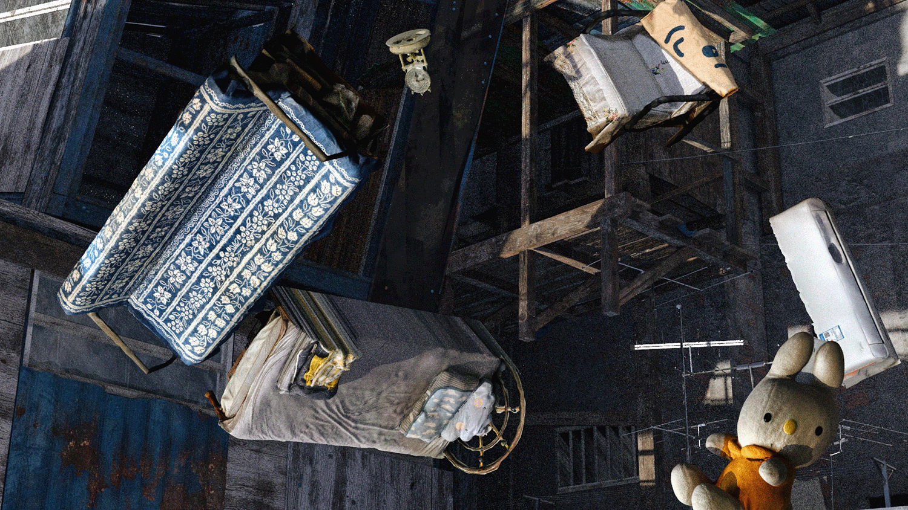

ü߆
Could objects serve as
an anchor for spatial memories,
enhancing and connecting specific reflections?

"Moving" seems to be an inescapable action in contemporary society. Carrying
furniture and utensils as much as they can, people leave behind one dwelling, and place
their bodies and belongings into another. While the abstract spatial memory of a past house
often fades, a vivid revival can be awakened through encountering those old collections.
Couple of Singles
is a VR experience about a couple's memory of their first house together. It's a combination of
two
types of memory assets: the spatial layout of the old house reconstructed from personal
interviews, as well as the furniture, that was carried all the way to their current house,
scanned via photogrammetry. Whether based on subjective descriptions or objective
recordings, both are interwoven to trigger a holistic reflection of “home” as a dynamic
nexus of human relationships.